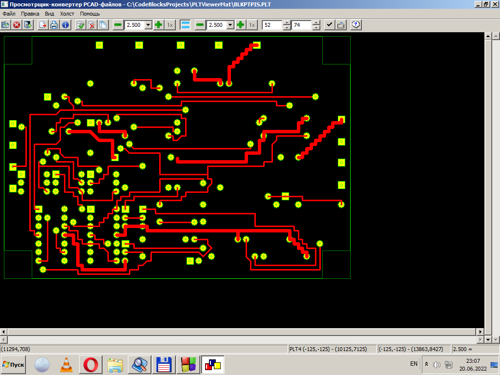

Программа ПиКАДОГЛЯД - просмотрщик-конвертер графических файлов, порождаемых PCAD для DOS. Следовательно, главное в ней - их просмотр. Но это не всё. Такие файлы - не абстрактная картинка, не произведение изобразительного искусства, а лишь полуфабрикат, промежуточная ступень для изготовления их специфической "твёрдой копии" - фотошаблонов, программ сверловки, самих печатных плат и, в конечном счёте, готового радиоэлектронного устройства. Поэтому, кроме просмотра, программа также предоставляет функции для некоторой обработки изображений и подготовки их к выходным операциям - преобразованию в иные графические форматы и печати на подключённом к компьютеру печатающем устройстве.
Общий вид рабочего окна программы.

Прежде всего, PCAD-файл следует открыть.
При открытии файла он преобразуется одним из загрузчиков программы в её специальное внутреннее представления. Каждый такой загрузчик обеспечивает поддержку входного файла одного, определённого формата. Открытие файла выполняется посредством пункта меню - "Файл\Открыть" или пунктов подменю "Файл\Открыть как". Первый вариант позволяет открыть любой поддерживаемый программой файл любым доступным загрузчиком. Выбор совместимого загрузчика производится в данном случае по расширению имени файла. При этом будет сделана попытка открыть входной файл каждым загрузчиком, поддерживающим файлы с соответствующим расширением.
Данная операция доступна не только из меню, а также с помощью кнопки 1 на полосе инструментов(инструменетарии).
Каждый пункт подменю "Файл\Открыть как" соответствует одному конкретному существующему загрузчику программы и позволяет сделать попытку открытия любого файла именно им, вне зависимости от расширения его имени.
Документы PCAD являются не полностью автономными. Для их корректного открытия и/или отображения необходима некоторая дополнительная информация, которая не содержится непосредственно в самом файле изображения. Эта информация находится в дополнительном файле, называемом файлом описания апертур. Программой поддерживаются два вида таких файлов: файл апертур типа PCAD (этот файл формируется и используется самим комплексом DOS PCAD, конкретно, программой PC-PHOTO), а также файл апертур в формате CAM350, который имеет открытый человекочитаемый формат и обычно используется как внешний источник информации об апертурах при передаче документации на производство.
Файл апертур типа PCAD содержит несколько секций с данными, используемыми при построении выходного изображения для разных типов и моделей фотокоординатографов. Для применения при просмотре можно выбрать одну из двух: предназначенную для устройства модели GERBER32 (она содержит описания 24 апертур) и для фотокоординатографа типа GERBER LASER (там описаны 255 апертур). Файл типа CAM350 состоит из одного, единого, списка засветок, не разделённого на отдельные секции. Как правило, он тоже содержит описание 255 апертур.
Выбирать такой требуемый файл, который предполагается использовать в текущем сеансе работы с программой, следует предварительно, перед открытием какого-либо файла с изображением. Это делается через общий диалог конфигурирования программы, вызываемый пунктом меню "Настройка/Параметры". В его состав входит специальный обособленный блок, позволяющий выбрать и загрузить конкретный файл апертур с диска, а также указать его нужную для использования секцию (это возможно только для файлов в формате PCAD). В случае, если пользователем файл описания засветок не выбран, будет использоваться набор апертур по умолчанию, который определён внутри программы-просмотрщика. Он совпадает с наиболее распространённой версией набора апертур, чаще всего применяемой с фотокоординатографом GERBER LASER. В этом случае отрисовка некоторых примитивов, требующих сведений об апертурах, может отличаться от их истинного вида и быть приблизительной (условной).
После успешного открытия файла его графическое содержимое показывается в окне просмотра. Данное окно состоит из поля отображения, двух пар полос прокрутки по сторонам поля, полосы основных инструментов, а также меню, через которое можно получить доступ ко всему функционалу программы. Из четырёх полос прокрутки две (ближайшие к поля вывода, с номерами 1 и 2 на рисунке) управляют положением окна просмотра относительно площади всей картинки, а ещё две полосы прокрутки (дальние относительно поля вывода, с номерами 3 и 4 на рисунке) аналогично определяют положение холста.
В каждый момент времени в поле зрения выводится только часть общего изображения, размер которой зависит от размера всей картинки и текущих устновленных масштабов. Перемещать окно просмотра относительно общего изображения можно, используя соответствующие упомянутые выше полосы прокрутки, а также используя стрелочные клавиши клавиатуры. Нажатие непосредственно стрелок приводит к соответственному по направлению смещению поля зрения малым, медленным, шагом. Если одновременно с нажатием на "стрелки" удерживать нажатым клавишу Shift, то величина шага смещения поля зрения увеличится в 4 раза, образуя, таким образом, средную скорость его движения. Применение клавиш страничной прокрутки (Home, End, PgUp, PgDn) позволяет передвигать окно просмотра на самой высокой скорости, увеличивая шаг его перемещения ещё в 2.5 раза. Наконец, клавиши страничной прокрутки в сочетании с удержанием Shift сразу устанавливают область просмотра в одно из крайних положений - крайне левое, крайне правое, крайне верхнее или крайне нижнее соответственно. Клавиши управления курсором действуют описанным образом, только если область просмотра является активной (имеет фокус ввода).
Изображение выводится в окно просмотра в определённом масштабе относительно истинного содержимого оригинального файла. И вторым важнейшим инструментом управления просмотром является установка некоторой требуемой величины этого масштаба. В общем случае в программе приняты разные величины масштабов по двум основным осям - горизонтальной (абсцисс) и вертикальной (ординат). Эти масштабы могут устанавливаться плавно на любое требуемое число, а также на одно из стандартных значений, принадлежащих некоторому ряду. Предусмотрено также ступенчатое изменение масштаба различными сочетаниями клавиш клавиатуры.
В программе существует также специальный равномасштабный режим, при котором масштабы по осям равны и управляются совместно. Более детальные сведения о поддерживаемой программой системе масштабов и управления ей можно получить здесь.
Некоторые операции обработки изображения могут выполняться не только над всем изображением сразу, но и над отдельными подмножествами его примитивов. Для этого нужно предварительно сформировать такое подмножество. В программе существует три способа сделать это - выделение отдельных примитивов, построение выделяющей рамки и выделение форматного региона - холст.
Отдельный примитив можно выделить (или снять с него выделение) простым щелчком по нему в окне просмотра. При этом его цвет изменяется на более бледный - преобразованный. Таким образом можно отличить помеченные примитивы от непомеченных.
Также можно выделять/снимать выделение элементов сразу группами, с использованием выделяющей рамки. Все операции с рамкой (построение, корректировка, удаление) должны выполняться при удержании в нажатом положении клавиши Alt.
Так, первоначально рамка образуется при движении мыши по области обзора с зажатой левой кнопкой, если перед нажатием левой кнопки мыши была нажата и удерживается клавиша Alt. Место нажатия левой кнопки мыши определяет положение одной из вершин выделяющего прямоугольника, а место её отпускания - второй его вершины, располагающейся по диагонали от первой.
После отпускания кнопки мыши в области просмотра будет отображаться рамка в её текущем состояние. Она всегда представляет собой прямоугольник, в вершинах которого дополнительно рисуются особые элементы - ручки. В дальнейшем, поместив курсор мыши на любую из сторон рамки или на ручки вершин, а затем нажав левую кнопку мыши (клавиша Alt клавиатуры по-прежнему должна быть предварительно нажата и удерживаться), можно перемещать отмеченный данным способом элемент рамки в любую другую целевую точку. Таким образом, текущая форма рамки может изменяться - редактироваться.
Наконец, вовсе удалить рамку можно коротким щелчком по левой кнопке мыши, не допуская при этом её перемещения.
Построенную таким методом и, при необходимости, откорректированную рамку можно использовать как выделитель подмножества объектов при совершении над ними какой-либо операции. Набор возможных операций - выделении/снятие выделения, распечатка, копирование в буфер обмена, экспорт. При совершении каждой такой операции, если при этом включён режим использования рамки, а сама она существует, то операция будет выполнена только над теми примитивами, чьи описанные прямоугольники пересекаются с выделяющей рамкой.
Третий способ ограничения подмножества операционных примитивов - специальный инструмент "Холст". Он выделяет уже не отдельные примитивы, а некоторый регион исходного изображения, положение и размер которого уже не зависят от текущих установленных масштабов. Более детально с работой холста можно познакомиться здесь.
Снятие пометок с примитивов возможно либо индивидуально - щелчком по элементу - либо со всех отмеченных примитивов одновремнно - вызовом пункта меню "Правка\Снять отметки" или нажатием соответствующей кнопки инструментария. Также существует пункт меню для общей пометки всех существующих в изображении примитивов - "Правка\Отметить всё".
Помимо просмотра, другой основной операцией, которую может быть необходимо провести с изображением, является его экспорт в какой-либо сторонний приёмник. Таковым приёмником может служить:
Такой экспорт изображения выполняется с помощью таких пунктов меню:
Все эти подменю устроены единообразно: первые три пункта-кнопки позволяют выбрать подмножество обрабатываемых элементов, а последующие пункты непосредственно указывают и выполняют желаемую операцию. Первые три пункта-детализатора - независимые двухпозиционные выключатели (включён\выключен).
Если пункт "На холсте" включён, то, как и следует ожидать, на экспорт могут быть направлены только те примитивы, которые на момент выполнения операции хотя бы частично находятся в пределах холста, все прочие элементы отбрасываются. При включении пункта "Отмеченное" на экспорт могут быть направлены только помеченные примитивы. Наконец, пункт "Внутри контура" ограничивает операционное подмножество только теми элементами, которые пересекаются с прямоугольником выделяющей рамки. При одновременной активации любой комбинации из перечисленных выше пунктов требования к отбираемым примитивам объединяются - обрабатываются только те примитивы, которые удовлетворяют условиям, соответствующим каждому из включённых пунктов меню. Если все пункты-селекторы отключены, на экспорт отправляются все существующие элементы исходного файла. Более подробно доступные операции экспорта описаны тут.
Есть также особый пункт меню "Правка\Копировать". В этом случае тип копируемого подмножества выбирается автоматически. Если существует хоть один отмеченный элемент, то копироваться будет только множество отмеченных примитивов. Если на экран вдобавок выведен холст, подмножество копируемых элементов ограничивается дополнительно только теми, которые полностью или частично располагаются на холсте. Наконец, наличие активной рамки выделения приводит к тому, что из выбранных по вышеуказанным правилам примитивов для выполнения копирования остаются лишь те, которые имеют непустое пересечение с прямоугольником рамки. Для этого пункта меню также существует альтернативный способ вызова - кнопка инструментария,выполняющая аналогичную функцию.
Здесь следует отметить четыре доступных операции, не упомянутых ранее.
Функция получения информации о загруженном файле позволяет в компактном виде вывести на экран в специальном диалоге общую информацию об открытом изображении. Более подробные сведения об этой функции, структуре её диалога и содержании предоставляемой информации могут быть найдены здесь.
Файлы PCAD имеют многослойную структуру - изображение состоит из множества накладывающихся друг на друга слоёв, каждый примитив всегда размещается на одном конкретном, вполне определённом слое. При трассировке и производстве печатных плат, разработанных в САПР PCAD, слои имеют различное конструктивное назначение, на каждом отдельном слое помещаются различные, но вполне определённые, конструктивные элементы платы. Например, слой COMP содержит печатные проводники на стороне компонентов, а слой SOLDER - печатные дорожки обратной стороны платы, стороны "припоя".
Программа позволяет получить общую, но достаточно полную информацию об слоевой структуре загруженного изображения, а также выполнять над ней некоторые операции. Для этого служит пункт меню "Вид\Слои", при выборе которого на экран выводится специальный диалог. Помимо осведомительных целей, диалог включает в себя некоторые средства изменения стиля рисования элементов, принадлежащих отдельным слоям. Тут предоставляется возможность отключить отдельные слои, удалив все их примитивы из рисовки, а также изменить палитру цветов изображения, назначив каждом слою какой-либо иной, нестандартный цвет.
Программа предоставляет некоторые средства многоязычности (далее будет обозначаться как "м12ть" - "международность"), впрочем, стандартные для интерфейсного каркаса wxWidgets. Обеспечение м12ти базируется на стандартном подходе GNU gettext, хотя wxWidgets предоставляет внутреннюю, полностью независимую его реализацию. Источником данных для м12ти служат файлы перевода в формате .mo. Каждый из них хранит отдельный перевод и должен располагаться в каталожной структуре файловой системы строго определённым образом. Например, для Windows в месте расположения исполняемого файла программы находятся каталоги, имена которых совпадают с краткими каноническими именами языков перевода (например, en - английский язык, de- немецкий).
При запуске программа сканирует маршруты размещения языковых файлов и составляет список доступных переводов, оформленный в виде подменю "Вид/Доступные языки". Пункты данного подменю совпадают с полными каноническими названиями имеющихся языков, и выбор какого-либо из них переключает язык интерфейса программы на соответствующий выбранному пункту.
Установить некоторые параметры обработки и отображения загружаемого изображения позволяет пункт меню "Настройка/Параметры". Диалог состоит из нескольких отдельых блоков, управляющих отдельными аспектами настройки программы. Прежде всего, это описанный выше выбор файла описания апертур (засветок), используемых при обработке изображений. Второй блок позволяет установить единицы измерения длины, в которых будут вводиться и выводиться координаты точек изображения и длины его участков. Поддерживаются три типа размерных единиц - единицы базы данных (DBU), миллиметры и дюймы.
Следующий блок - выбор коэффициентов дополнительного масштаба. Эти коэффициенты будут прозрачно применяться при построении всех примитивов дополнительно к явно установленному масштабу изображения. Это может быть полезно, если фактическая система координат рисунка - нестандартная и реально не соответствует указанной в его метаданных. Например, одной такой нестандартной координатной единицей является "русский дюйм", т. е. единица, равная точно 25 мм. При этом в метаданных файлов заявлено применение дюймовой координатной системы. Таким образом, без коррекции размер рисунка окажется в 25.4/25 = 1.016 раза больше истинного. Это можно исправить введением соответствующего дополнительного масштаба.
Наконец, последний блок, состоящий из одного "крыжика", позволяет включить или отключить применение "подмасштабов" для рисования на экране. Вообще, подмасштабы служат для обеспечения физической точности размеров построенного изображения при создании его "твёрдой копии", например, на принтере. Для этого следует выполнять ещё одно дополнительное масштабирование, которое будет учитывать фактическую величину точки (пикселя) на устройстве создания "твёрдых копий", т. е. его реальное физическое разрешение. Сведения о нём программа получает от операционной системы.
Аналогичную операцию можно проделать и для монитора, делая попытку обеспечить равенство размеров изображения на экране и его действительного физического размера. Но, к сожалению, предоставляемые ОС сведения о фактическом разрешении монитора, как правило, очень далеки от действительности. Поэтому использование подмасштабирования для экрана редко даёт хорошие результаты и часто приводит к ещё большим искажениям картинки, чем без этой операции. Применение такого подмасштабирования управляется состоянием единственного органа управления - "крыжика" - описываемого блока.